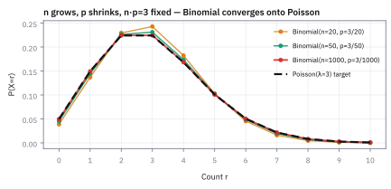
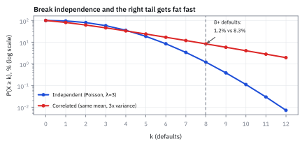

1.6 The Poisson Distribution
Poisson นับจำนวนเหตุการณ์ที่เกิดในช่วงหนึ่ง เมื่อเหตุการณ์มีโอกาสเกิดได้หลายจุดแต่แต่ละจุดโอกาสน้อย และต้องรู้แค่จำนวนเฉลี่ย $\lambda$ ตัวเดียว
พอร์ตถือหุ้นกู้ของบริษัทต่างกัน 200 ราย รายละ \$5 ล้าน แต่ละรายมีโอกาสผิดนัดชำระในหนึ่งปี 1.5% และถ้าผิดนัดจะได้เงินคืน 40% (ตัวเลขสมมติเพื่อฝึกคิด) ฝ่ายความเสี่ยงคำนวณว่าคาดว่าจะเสียหายปีละ \$9 ล้าน แล้วเสนอให้ตั้งงบรองรับความเสียหายไว้ \$9 ล้านพอดี หัวหน้าถามว่า งบนี้จะไม่พอบ่อยแค่ไหน
ลองตอบก่อนเปิดเฉลย
บ่อยกว่าหนึ่งในสามปี จำนวนรายผิดนัดเฉลี่ย $200\times1.5\%=3$ ราย และแต่ละรายเสีย \$5 ล้าน × 60% = \$3 ล้าน ค่าเฉลี่ยจึงเป็น \$9 ล้านจริง แต่งบ \$9 ล้านไม่พอทุกปีที่ผิดนัดตั้งแต่ 4 รายขึ้นไป ตามสูตร Poisson ที่หน้านี้จะสร้าง โอกาสนั้นคือ $1-e^{-3}(1+3+4.5+4.5)=1-13e^{-3}\approx35.3\%$ ส่วนปีที่เสียตั้งแต่ \$15 ล้าน (5 รายขึ้นไป) มีโอกาสราว 18.5% ค่าเฉลี่ยจึงไม่ใช่ระดับที่ควรใช้เป็นงบรองรับ
ภาพรวมก่อนลงสูตร
จำนวนรายผิดนัดจาก 200 รายเป็น binomial ได้ตามหน้า binomial distribution แต่สถานการณ์แบบนี้มีลักษณะพิเศษ: จุดที่เหตุการณ์อาจเกิดมีมาก (200 ราย) แต่ละจุดมีโอกาสน้อย (1.5%) และสิ่งที่เรารู้แน่ ๆ จริง ๆ คือจำนวนเฉลี่ยต่อช่วง (3 รายต่อปี) สถานการณ์แบบเดียวกันมีทั่วไปในตลาด: จำนวนคำสั่งซื้อขายที่เข้ามาในหนึ่งวินาที จำนวนครั้งที่ระบบล่มในหนึ่งเดือน จำนวนวันที่ราคากระโดดแรงในหนึ่งปี
เมื่อแบ่งช่วงให้ละเอียดขึ้นเรื่อย ๆ โดยรักษาจำนวนเฉลี่ยไว้ binomial จะเข้าใกล้ distribution ที่ใช้แค่ตัวเลขเดียว คือจำนวนเฉลี่ย $\lambda$ เรียกว่า Poisson distribution สูตรคือ $P(X=r)=\lambda^r e^{-\lambda}/r!$ และมีสมบัติเด่นว่าค่าเฉลี่ยกับ variance เท่ากับ $\lambda$ ทั้งคู่
หน้านี้จะแปลงอัตราเป็น $\lambda$ สร้างสูตรจาก binomial ตรวจว่ารวมได้หนึ่ง พิสูจน์ค่าเฉลี่ยและ variance แล้วใช้กับพอร์ตหุ้นกู้: ความเสียหายเฉลี่ย โอกาสเกินงบ ระดับความเสียหาย 99% และสิ่งที่เกิดเมื่อการผิดนัดไม่ได้อิสระกันจริง
รูป — หลายจุดเสี่ยง โอกาสน้อยต่อจุด นับรวมได้ Poisson
ศัพท์ที่ใช้ในหน้านี้
- Poisson distribution
- distribution ของจำนวนเหตุการณ์ในช่วงที่กำหนด $P(X=r)=\lambda^re^{-\lambda}/r!$ ใช้นับการผิดนัด คำสั่งซื้อขายที่เข้ามา หรือการกระโดดของราคา
- λ (intensity)
- จำนวนเหตุการณ์เฉลี่ยในช่วงที่ถาม เท่ากับอัตราต่อหน่วยเวลาคูณความยาวช่วง ไม่ใช่โอกาส จึงมากกว่าหนึ่งได้
- default / recovery / LGD
- การผิดนัดชำระ, สัดส่วนเงินที่ได้คืนหลังผิดนัด, และสัดส่วนที่เสีย (loss given default) $=1-$ recovery ใช้แปลงจำนวนรายผิดนัดเป็นเงิน
- expected loss
- ค่าเฉลี่ยของความเสียหาย ใช้ตั้งราคาสินเชื่อ แต่ไม่ใช่ระดับที่ปลอดภัยสำหรับปีแย่
- overdispersion
- ข้อมูลนับที่ variance มากกว่าค่าเฉลี่ย สัญญาณว่าเหตุการณ์เกิดเป็นกลุ่ม ซึ่ง Poisson จะประเมินหางต่ำไป
สัญลักษณ์ ความหมาย และหน่วย
| สัญลักษณ์ | ความหมาย | หน่วย |
|---|---|---|
| $X$, $r$ | จำนวนรายผิดนัด (สุ่ม), ค่าที่กำลังถาม | ราย |
| $\lambda$ | จำนวนรายเฉลี่ยในหนึ่งปี | ราย |
| $n$, $p$ | จำนวนช่องย่อยหรือจำนวนราย, โอกาสต่อช่อง | ช่อง, ไม่มีหน่วย |
| $L$ | ความเสียหายต่อหนึ่งราย | ดอลลาร์ |
| $S=LX$ | ความเสียหายรวมในหนึ่งปี | ดอลลาร์ |
| $e$ | ฐานของ exponential ≈ 2.71828 | ไม่มีหน่วย |
ขั้นที่ 1 — λ คือจำนวนเฉลี่ยในช่วงที่ถาม
ทุกโจทย์ Poisson เริ่มที่ตัวเลขเดียว คือจำนวนเหตุการณ์เฉลี่ยในช่วงที่ถาม ถ้ารู้เป็นอัตรา ให้คูณด้วยความยาวช่วงในหน่วยเวลาเดียวกัน ถ้ารู้เป็นจำนวนจุดเสี่ยงกับโอกาสต่อจุด ให้คูณสองตัวนั้น
บรรทัดแรกคือพอร์ต 200 ราย รายละ 1.5% บรรทัดที่สองคือคำสั่งซื้อขายที่เข้ามาเฉลี่ย 20 รายการต่อวินาที ถามช่วง 0.1 วินาที บรรทัดสุดท้ายคือระบบเตือนที่ดังเฉลี่ย 2 ครั้งต่อชั่วโมง ถามช่วงครึ่งชั่วโมง $\lambda$ ไม่ใช่โอกาส จึงเป็น 3 หรือ 20 ก็ได้ ความผิดพลาดที่พบบ่อยที่สุดคือใช้อัตราผิดช่วง: ระบบเตือนที่ดังเฉลี่ย 2 ครั้งต่อชั่วโมง ถ้าถามครึ่งชั่วโมงต้องใช้ $\lambda=1$ ไม่ใช่ 2 การคูณแบบนี้ถูกเมื่ออัตราคงที่ตลอดช่วง ถ้าคำสั่งซื้อขายเข้ามาหนาแน่นตอนเปิดตลาดและเบาบางตอนเที่ยง ต้องหาจำนวนเฉลี่ยของช่วงที่ถามจริง ๆ ไม่ใช่ใช้ค่าเฉลี่ยทั้งวัน
ขั้นที่ 2 — โอกาสที่ไม่มีเหตุการณ์เลย และที่มาของ e
เริ่มจากคำถามง่ายที่สุด: ปีหนึ่งไม่มีรายใดผิดนัดเลยมีโอกาสเท่าไร แบ่งปีเป็น $n$ ช่องย่อย (หรือมอง $n$ ราย) แต่ละช่องมีเหตุการณ์ด้วยโอกาส $\lambda/n$ อย่างอิสระ ให้ทุกช่องเงียบ แล้วดูว่าเกิดอะไรเมื่อแบ่งละเอียดขึ้นโดยค่าเฉลี่ยยังเป็น 3
ทำไมได้ $e$: ใส่ log แล้วได้ $n\ln(1-\lambda/n)$ เมื่อ $u$ เล็ก $\ln(1-u)\approx -u$ (ความชันของ $\ln$ ที่จุด 1 คือ 1) จึงได้ $n\times(-\lambda/n)=-\lambda$ ถอด log กลับได้ $e^{-\lambda}$ ความหมายคือ เมื่อจุดเสี่ยงมากขึ้นแต่ค่าเฉลี่ยคงที่ คำตอบหยุดเปลี่ยนและนิ่งที่ $e^{-\lambda}$ ที่ $n=200$ ซึ่งคือพอร์ตจริงของเรา ได้ 4.87% ใกล้ค่าขีดจำกัด 4.98% แล้ว ปีที่ไม่มีใครผิดนัดเลยจึงเกิดราวหนึ่งปีในยี่สิบ
รูป — แบ่งละเอียดขึ้น โอกาสศูนย์ครั้งนิ่งที่ e⁻³
ขั้นที่ 3 — จากศูนย์ครั้งไปสู่ r ครั้ง
ทำแบบเดียวกันกับโอกาสที่เกิดพอดี $r$ ครั้ง เริ่มจาก binomial ที่มี $n$ ช่อง ช่องละโอกาส $\lambda/n$ แยกสูตรเป็นตัวประกอบ แล้วดูว่าแต่ละตัวไปไหนเมื่อ $n$ โตโดย $r$ คงที่
$A_n$ มาจากตัวเศษของ $\binom nr$ หารด้วย $n^r$ ซึ่งยืมมาจาก $(\lambda/n)^r$ มันคือผลคูณ $r$ ตัวที่แต่ละตัวใกล้ 1 เช่น $(n-1)/n$ เมื่อ $n$ ใหญ่ $B_n$ คือโอกาสเงียบทั้งหมดที่เพิ่งหา ส่วน $C_n$ ชดเชยที่เราเขียนกำลัง $n$ แทน $n-r$ และเข้าใกล้ 1 เพราะ $r$ คงที่ ที่เหลือคือ $\lambda^r/r!$ คูณ $e^{-\lambda}$ นี่คือ Poisson PMF
สังเกตว่า $n$ กับ $p$ หายไปจากสูตร เหลือแค่ $\lambda=np$ นี่คือข้อได้เปรียบหลัก: เราไม่ต้องรู้ว่าปีหนึ่งมีกี่ “โอกาสที่จะผิดนัด” แค่รู้ค่าเฉลี่ยก็พอ
รูป — binomial ที่ค่าเฉลี่ยเท่ากัน เข้าใกล้ Poisson เมื่อ n โต

ทุกแบบในรูปมีค่าเฉลี่ย 3 แต่เมื่อ $n$ เล็ก binomial ยังแคบกว่า Poisson เพราะจำนวนครั้งเกิน $n$ ไม่ได้ เมื่อ $n$ โตขึ้น แท่งของ binomial ทาบกับแท่งของ Poisson เกือบสนิท Poisson จึงเป็นขีดจำกัด ไม่ใช่ binomial ทุกตัวที่ค่าเฉลี่ย 3
ขั้นที่ 4 — ตรวจว่ารวมได้หนึ่ง และคำนวณแท่งถัดไปจากแท่งก่อน
Poisson มีค่าที่เป็นไปได้ไม่สิ้นสุด 0, 1, 2, … จึงต้องตรวจว่าผลรวมทั้งหมดได้หนึ่งจริง เครื่องมือคืออนุกรมของ exponential $e^{a}=\sum_{r\ge0}a^r/r!$ อนุกรมเดียวกันให้วิธีคำนวณแท่งทีละแท่งที่ใช้เครื่องคิดเลขได้
อัตราส่วนของแท่งติดกันคือ $\lambda/r$ แท่งจึงสูงขึ้นตราบที่ $r\lt\lambda$ เท่ากันที่ $r=\lambda$ และลดลงหลังจากนั้น เมื่อ $\lambda=3$ แท่ง 2 กับแท่ง 3 จึงสูงเท่ากันพอดีที่ 22.40% ค่าที่มีโอกาสมากที่สุดจึงมีสองค่า และไม่มีค่าไหนมีโอกาสเกินหนึ่งในสี่ แท่งต่อไปคือ $0.2240\times\tfrac34\approx0.1680$, $\times\tfrac35\approx0.1008$ และต่อไปเรื่อย ๆ
ขั้นที่ 5 — ค่าเฉลี่ยและ variance เท่ากับ λ ทั้งคู่
เราตั้ง $\lambda$ เป็นจำนวนเฉลี่ยตั้งแต่แรก จึงควรตรวจว่าสูตรให้ค่าเฉลี่ยเป็น $\lambda$ จริง แล้วหา variance ด้วยเทคนิคเดียวกัน กลเม็ดคือให้ตัวคูณ $r$ ไปตัดกับ $r!$ ข้างล่าง
บรรทัดแรกเริ่มที่ $r=1$ เพราะพจน์ $r=0$ คูณด้วยศูนย์ หายไปเอง จากนั้น $r/r!=1/(r-1)!$ ดึง $\lambda$ หนึ่งตัวออกมา แล้วเปลี่ยนตัวนับเป็น $k=r-1$ ผลรวมที่เหลือคือ PMF ทั้งก้อนซึ่งรวมได้หนึ่ง ค่าเฉลี่ยจึงเป็น $\lambda$ variance ใช้ $X(X-1)$ เพราะ $r(r-1)$ ตัดกับ $r!$ ได้สองชั้น แล้วใช้ $X^2=X(X-1)+X$ กับสูตรลัด $\mathrm{Var}(X)=\mathbb E[X^2]-(\mathbb E[X])^2$
ผลคือ standard deviation $=\sqrt\lambda$ ที่ $\lambda=3$ ได้ 1.73 ราย การแกว่งเทียบกับค่าเฉลี่ยคือ $1/\sqrt\lambda$ ซึ่งลดลงเมื่อ $\lambda$ โต พอร์ตที่คาดว่าผิดนัด 100 รายจะแกว่งราว 10% ของค่าเฉลี่ย ส่วนพอร์ตที่คาดว่าผิดนัด 3 รายแกว่งถึง 58% ค่าเฉลี่ยกับ variance เท่ากันยังเป็นวิธีตรวจข้อมูลจริงด้วย: ถ้า variance ของจำนวนที่นับได้สูงกว่าค่าเฉลี่ยมาก Poisson อาจไม่เหมาะ
ขั้นที่ 6 — แปลงจำนวนรายเป็นเงิน แล้วตอบคำถามเรื่องงบ
ตอนนี้ใช้กับพอร์ตได้ ให้ $L$ เป็นความเสียหายต่อหนึ่งรายที่ผิดนัด และสมมติให้คงที่ ความเสียหายรวม $S=LX$ เป็นแค่ $X$ คูณค่าคงที่ จึงใช้ linearity และกฎการขยาย variance ได้ทันที
ความเสียหายเกิดเป็นก้อนละ \$3 ล้าน เกิน \$9 ล้านได้ก็ต่อเมื่อผิดนัดอย่างน้อย 4 ราย เราจึงเปลี่ยนคำถามเรื่องเงินเป็นคำถามเรื่องจำนวนราย แล้วใช้หลักแบ่งกอง: หนึ่งลบโอกาสของ 0 ถึง 3 ราย ได้ 35.28% งบที่ตั้งเท่าค่าเฉลี่ยจึงไม่พอเกินหนึ่งในสามของปี เหตุผลคือ distribution เบ้ขวา: ฝั่งซ้ายของค่าเฉลี่ยถูกตันที่ศูนย์ราย ส่วนฝั่งขวายืดไปได้ไกล
สมมติฐาน “recovery คงที่ 40%” ทำให้งานง่าย ในความจริง recovery มักต่ำลงในปีที่ผิดนัดกันมาก ซึ่งทำให้หางขวาของความเสียหายหนักกว่าที่คำนวณนี้อีก
รูป — ความเสียหายทั้งปีกับงบที่ตั้งเท่าค่าเฉลี่ย
ขั้นที่ 7 — ระดับความเสียหายที่ครอบคลุม 99% ของปี
ถ้างบเท่าค่าเฉลี่ยไม่พอ ควรตั้งเท่าไร คำถามที่ถูกคือ “ระดับที่ไม่ถูกเกินใน 99% ของปี” ซึ่งคือ quantile 99% ของความเสียหาย ใช้กติกาเดียวกับหน้า CDF: หาจำนวนรายที่น้อยที่สุด $k$ ซึ่ง $P(X\le k)$ ถึง 0.99
ยอดสะสมถึง 7 รายได้ 98.81% ยังขาดอีกนิด พอถึง 8 รายได้ 99.62% เกิน 99% ไปแล้ว ระดับ 99% จึงเป็น \$24 ล้าน หรือราว 2.7 เท่าของค่าเฉลี่ย จำนวนรายขึ้นทีละหนึ่ง เลยไม่มีระดับที่ให้ 99% พอดี ระดับนี้ไม่ใช่ความเสียหายสูงสุด ยังเหลือโอกาสราว 0.38% ที่จะผิดนัดเกิน 8 ราย และทั้งหมดนี้ถูกต้องเท่าที่สมมติฐาน “ผิดนัดอิสระกัน” ถูกต้อง
รูป — เส้น 99% ชนบันไดที่ 8 ราย
ขั้นที่ 8 — ตรวจกับ binomial จริง แล้วดูว่าเมื่อไร Poisson ใช้ไม่ได้
ภายใต้สมมติฐานของโจทย์ คำตอบตรงคือ $\mathrm{Bin}(200,0.015)$ ควรเทียบให้เห็นว่าการประมาณพลาดเท่าไร แล้วถามคำถามที่สำคัญกว่า: ถ้าการผิดนัดไม่อิสระกันจริงล่ะ ลองแบบจำลองที่เศรษฐกิจมีสองสภาพ (สมมติ): ปีปกติ (โอกาส 60%) เฉลี่ยผิดนัด 1.5 ราย และปีถดถอย (40%) เฉลี่ย 5.25 ราย ค่าเฉลี่ยรวมยังเป็น $0.6(1.5)+0.4(5.25)=3$ เท่าเดิม
binomial กับ Poisson ต่างกันไม่ถึง 0.2 จุดเปอร์เซ็นต์ การประมาณจึงไม่ใช่ปัญหา ปัญหาจริงอยู่ที่ independence ในความจริงบริษัทผิดนัดพร้อมกันเพราะเศรษฐกิจตัวเดียวกันกระทบทุกราย ในแบบจำลองสองสภาพ เมื่อรู้สภาพเศรษฐกิจแล้ว การผิดนัดยังอิสระกัน (conditional independence) แต่เมื่อไม่รู้ ปีแย่จะมีหลายรายพร้อมกัน variance จึงขึ้นจาก 3 เป็น 6.375 ทั้งที่ค่าเฉลี่ยเท่าเดิม และโอกาสเสียตั้งแต่ \$15 ล้านขึ้นจาก 18.47% เป็น 25.20% ระดับ 99% ก็ขยับจาก 8 รายเป็น 10 ราย หรือ \$30 ล้าน
variance 6.375 แยกเป็นสองส่วน: 3 มาจากความแกว่งภายในแต่ละสภาพ และ 3.375 มาจากการที่ค่าเฉลี่ยของสองสภาพต่างกัน นี่คือ law of total variance ส่วนแนวคิด “อิสระกันเมื่อรู้ปัจจัยร่วม” คือแกนของ conditional independence และ Gaussian copula ซึ่งเป็นแบบจำลองที่ตลาดใช้ตั้งราคาพอร์ตสินเชื่อจนถึงวิกฤตปี 2008
รูป — ค่าเฉลี่ยเท่ากัน หางต่างกัน

แท่งของ Poisson ที่มีค่าเฉลี่ยและ variance เท่ากับ 3 เทียบกับแบบจำลองการนับที่ค่าเฉลี่ยเท่ากันแต่ variance สูงกว่า แบบหลังมีทั้งปีที่เงียบมากกว่าและปีที่ผิดนัดจำนวนมากกว่า หางขวาหนักกว่า ข้อมูลการผิดนัดจริงมักเป็นแบบหลัง
จุดที่พลาดแล้วได้คำตอบผิดโดยไม่รู้ตัว
ใช้ค่าเฉลี่ยเป็นงบ: งบ \$9 ล้านเท่า expected loss ไม่พอ 35.3% ของปี เพราะ distribution ของการนับที่ค่าเฉลี่ยเล็กเบ้ขวาเสมอ ถ้าต้องการระดับที่ไม่ถูกเกินใน 99% ของปี ต้องใช้ quantile (\$24 ล้าน) ไม่ใช่ค่าเฉลี่ย
ใช้อัตราผิดช่วงเวลา: ระบบเตือนดังเฉลี่ย 2 ครั้งต่อชั่วโมง โอกาสเงียบตลอดครึ่งชั่วโมงคือ $e^{-1}=36.79\%$ ถ้าเผลอใช้ $\lambda=2$ จะได้ $e^{-2}=13.53\%$ ต่างกันเกือบสามเท่า
อ่านแท่งเดียวแทนหาง: $P(X=5)=10.08\%$ ไม่ใช่โอกาสเสียตั้งแต่ \$15 ล้าน ซึ่งต้องรวมทุกแท่งตั้งแต่ 5 ราย ได้ 18.47%
เชื่อ independence ในจุดที่ไม่มี: Poisson และ binomial ต่างสมมติว่าเหตุการณ์ไม่เกี่ยวกัน การผิดนัด ความล้มเหลวของระบบที่ใช้โครงสร้างเดียวกัน และคำสั่งขายตอนตลาดตื่นตระหนก ล้วนเกิดเป็นกลุ่ม ถ้าข้อมูลมี variance สูงกว่าค่าเฉลี่ยมาก ให้สงสัยก่อนใช้หางของ Poisson
ใช้ทำอะไรบนโต๊ะจริง
ทีมระบบซื้อขายใช้ Poisson วางแผนความจุ: ถ้าคำสั่งเข้าเฉลี่ย 20 รายการต่อวินาที และระบบรับได้ 25 รายการต่อวินาที โอกาสที่วินาทีหนึ่งมีคำสั่งเกินความจุคือ $P(X\gt25)\approx11.2\%$ ไม่ใช่ศูนย์แม้ค่าเฉลี่ยต่ำกว่าความจุ ถ้าแต่ละคำสั่งถูกจับคู่สำเร็จอย่างอิสระด้วยโอกาส 30% จำนวนคำสั่งที่สำเร็จต่อวินาทีก็เป็น Poisson เช่นกัน มีค่าเฉลี่ย $20\times0.3=6$ ผลนี้ได้จากการใช้ indicator กับแต่ละคำสั่ง (Poisson thinning) ในด้านเครดิต แนวคิดอัตราการผิดนัดต่อหน่วยเวลาถูกพัฒนาต่อเป็น hazard rate ที่ใช้ตั้งราคาหุ้นกู้และ CDS (defaultable bonds และ hazard rates)
โจทย์ตรวจความเข้าใจ
1. ระบบเตือนดังเฉลี่ย 2 ครั้งต่อชั่วโมงด้วยอัตราคงที่ โอกาสที่ไม่ดังเลยตลอดครึ่งชั่วโมง และโอกาสที่ดังอย่างน้อย 4 ครั้งในหนึ่งชั่วโมงคือเท่าไร
เฉลย
ครึ่งชั่วโมง: $\lambda=2\times0.5=1$ จึงได้ $e^{-1}\approx36.79\%$ หนึ่งชั่วโมง: $\lambda=2$ รวมแท่ง 0 ถึง 3 ได้ $e^{-2}(1+2+2+\tfrac43)=6.333e^{-2}\approx0.8571$ จึงได้ $P(X\ge4)\approx14.29\%$ สองตัวเลขนี้ใช้ $\lambda$ คนละค่าเพราะถามคนละช่วงเวลา
2. พอร์ตเดิม แต่ recovery เหลือ 20% แทน 40% โดยสมมติฐานอื่นเท่าเดิม expected loss โอกาสผิดนัดอย่างน้อย 5 ราย และระดับความเสียหาย 99% เปลี่ยนอย่างไร
เฉลย
ความเสียหายต่อรายเป็น \$5 ล้าน × 0.80 = \$4 ล้าน expected loss เป็น $3\times\$4=\$12$ ล้าน โอกาสผิดนัดอย่างน้อย 5 รายยังเป็น 18.47% เพราะ distribution ของจำนวนรายไม่เปลี่ยน แต่เหตุการณ์นั้นตอนนี้หมายถึงเสียตั้งแต่ \$20 ล้าน ระดับ 99% ยังเป็น 8 ราย แต่เป็นเงิน $8\times\$4=\$32$ ล้าน recovery เปลี่ยนขนาดของแต่ละก้อน ไม่เปลี่ยนจำนวนก้อน
3. คำสั่งซื้อขายเข้าเฉลี่ย 20 รายการต่อวินาที แต่ละคำสั่งถูกจับคู่สำเร็จอย่างอิสระด้วยโอกาส 30% จำนวนคำสั่งที่สำเร็จในหนึ่งวินาทีมีค่าเฉลี่ยเท่าไร และโอกาสที่ไม่มีคำสั่งสำเร็จเลยในวินาทีหนึ่งคือเท่าไร
เฉลย
คำสั่งที่สำเร็จเป็น Poisson ที่มีค่าเฉลี่ย $20\times0.3=6$ รายการต่อวินาที โอกาสไม่มีเลยคือ $e^{-6}\approx0.25\%$ หรือราวหนึ่งวินาทีใน 400 วินาที ค่าเฉลี่ย 6 ตรวจได้ด้วย indicator: ถ้ามีคำสั่ง $N$ รายการ จำนวนที่สำเร็จเฉลี่ยคือ $0.3N$ แล้วเฉลี่ยข้าม $N$ ได้ $0.3\times20=6$
คำนวณซ้ำด้วย JavaScript
เปิดดูโค้ด
// PMF ของ Poisson ด้วยสูตรแท่งถัดไป = แท่งก่อน × λ / r
function poisson(lambda, last) {
const p = [Math.exp(-lambda)];
for (let r = 1; r <= last; r++) p.push(p[r - 1] * lambda / r);
return p;
}
const p = poisson(3, 60);
const cdf = k => p.slice(0, k + 1).reduce((a, b) => a + b, 0);
console.log(p[0], p[3]); // 0.0498 0.2240
console.log(1 - cdf(3), 1 - cdf(4)); // 0.3528 0.1847
console.log(cdf(7), cdf(8)); // 0.9881 0.9962 → 8 ราย
const mean = p.reduce((s, v, r) => s + r * v, 0);
const varX = p.reduce((s, v, r) => s + r * r * v, 0) - mean ** 2;
console.log(mean, varX); // 3 3
console.log((1 - 3 / 200) ** 200, Math.exp(-3)); // 0.0487 0.0498
// แบบจำลองสองสภาพเศรษฐกิจ (สมมติ)
const good = poisson(1.5, 60), bad = poisson(5.25, 60);
const tail = (q, k) => 1 - q.slice(0, k).reduce((a, b) => a + b, 0);
console.log(0.6 * tail(good, 5) + 0.4 * tail(bad, 5)); // 0.2520
const orders = poisson(20, 80);
console.log(1 - orders.slice(0, 26).reduce((a, b) => a + b, 0)); // 0.1122สิ่งที่ควรตอบได้หลังอ่าน
- Poisson เกิดจาก binomial เมื่อจุดเสี่ยงมาก โอกาสต่อจุดน้อย และค่าเฉลี่ย $\lambda=np$ คงที่ สูตรคือ $P(X=r)=\lambda^re^{-\lambda}/r!$ และ $\lambda$ ต้องเป็นจำนวนเฉลี่ยของช่วงที่ถามจริง
- ค่าเฉลี่ยและ variance เท่ากับ $\lambda$ ทั้งคู่ การแกว่งเทียบกับค่าเฉลี่ยคือ $1/\sqrt\lambda$
- พอร์ตหุ้นกู้ตัวอย่างมี expected loss \$9 ล้าน แต่งบเท่านั้นไม่พอ 35.3% ของปี และระดับ 99% คือ \$24 ล้าน
- การประมาณ binomial ด้วย Poisson พลาดไม่ถึง 0.2 จุดเปอร์เซ็นต์ในตัวอย่างนี้ ความเสี่ยงที่ใหญ่กว่าคือการผิดนัดเกิดเป็นกลุ่ม ซึ่งเพิ่ม variance และหางได้มากโดยค่าเฉลี่ยไม่เปลี่ยน
หน้าถัดไป Bayes' theorem กลับทิศคำถาม: จากเดิมที่ถามว่า “ถ้ารู้แบบจำลอง ข้อมูลนี้เกิดได้แค่ไหน” เป็น “เมื่อเห็นข้อมูลแล้ว ควรเชื่อแบบจำลองไหนมากขึ้นเท่าไร” ซึ่งคือคำถามที่ค้างไว้ตอนประเมินผู้จัดการกองทุน